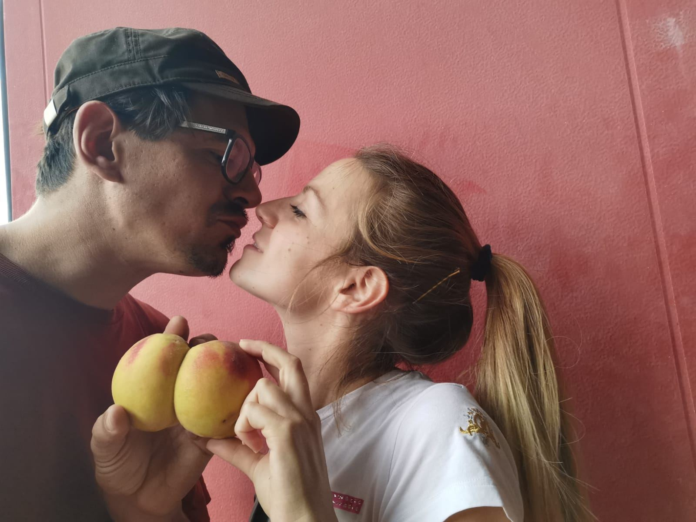
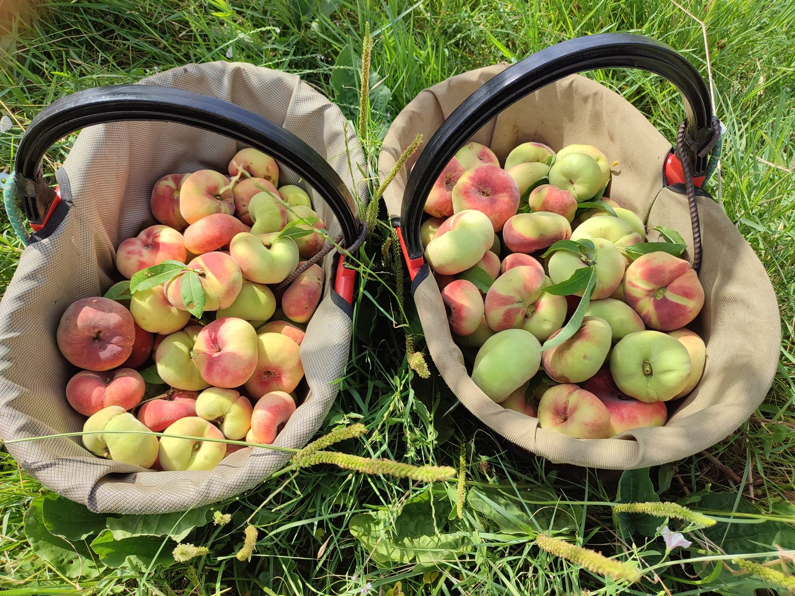

ali e radici
Savia Terra
Frutta e ortaggi coltivati da noi nella Valdaso e trasformati nel nostro laboratorio in confetture, nettari e passate.
Scopri i prodottiQuattro generazioni, una nuova storia
Nella fertile vallata della Valdaso, sulle colline marchigiane che legano il Mare Adriatico ai Monti Sibillini, Chiara e Davide portano avanti un'azienda agricola di famiglia che esiste da quattro generazioni.
Tradizione e innovazione: un'agricoltura sostenibile che segue i cicli naturali e ascolta i bisogni della terra. Coltiviamo frutta e ortaggi, abbiamo un vigneto con la nostra cantina e una piccola fattoria con bovini, asini, pecore, capre e galline.
Chi siamo
I nostri prodotti
Tutta la frutta che lavoriamo è coltivata da noi e lasciata maturare sull'albero, per ridurre al minimo gli zuccheri aggiunti.

Confetture
Pesca, pesca e lavanda, albicocca, pera, susine e marmellata di arance. Senza pectina né addensanti.

Nettari di frutta
Pesca in diverse varietà, pera, albicocca, mela e kiwi. Il colore lo decide la frutta.

Passate di pomodoro
San Marzano, Cuore di bue, datterini, ciliegini e molte altre varietà insieme.

Specialità
Fichi speziati e vino cotto invecchiato 50 anni, dalla nostra cantina.
Solo la purezza del frutto
Lavoriamo con metodi artigianali che mantengono intatte le proprietà organolettiche di frutta e ortaggi.
-
Coltivato da noi
La frutta matura sulla pianta fino al suo massimo grado di dolcezza naturale.
-
Subito in laboratorio
Lavaggio, selezione e taglio dopo la raccolta, senza passaggi in frigorifero.
-
Niente additivi
Nessun colorante, conservante o addensante: solo cottura in sottovuoto a temperatura controllata.
-
Oltre due anni
Pastorizzati e messi sottovuoto, i vasetti chiusi si conservano a lungo.
Il nostro lavoro
Raccogliamo la frutta a mano, la laviamo e la tagliamo nel nostro laboratorio, la cuociamo in sottovuoto e la imbottigliamo. Ogni vasetto lo etichettiamo noi, uno per uno.
Scopri come lavoriamo


Vienici a trovare
Vuoi ordinare o avere informazioni sui nostri prodotti? Scrivici su WhatsApp, chiamaci o passa in azienda.